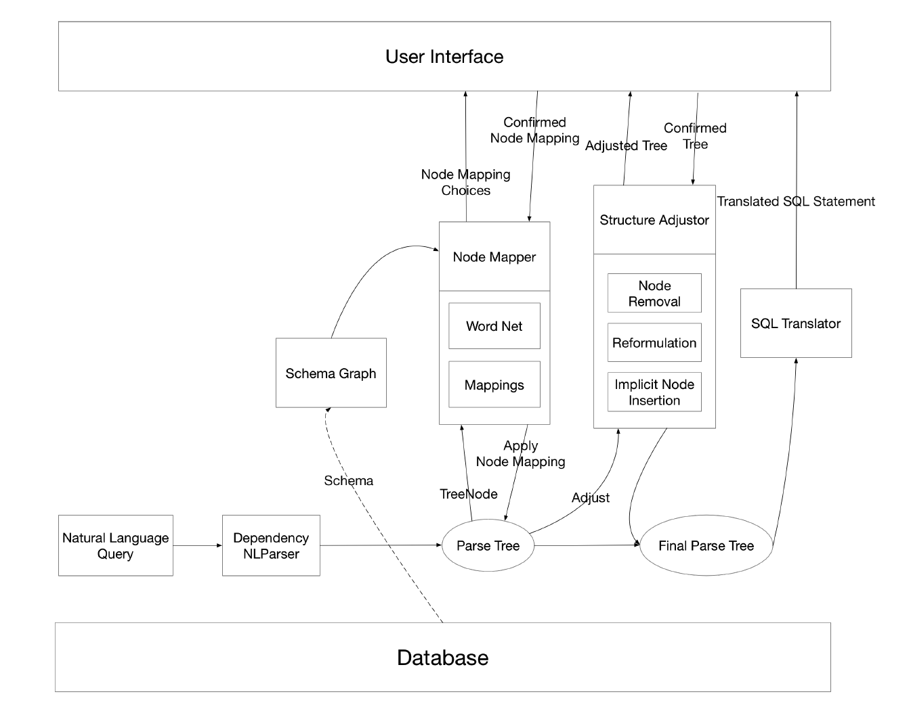
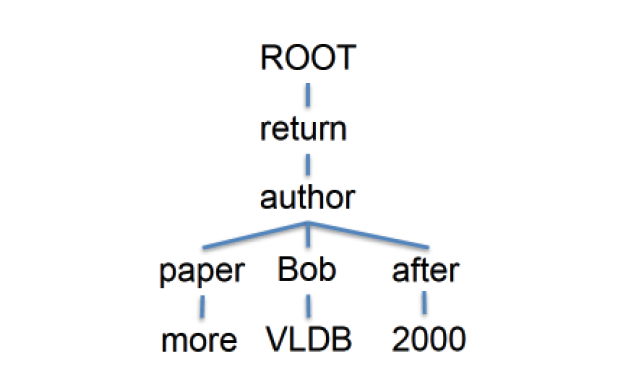

Building SQL Queries with a Natural Language Interface
1 Introduction
SQL language is a powerful tool for manipulating
data stored in database systems. However, writing
SQL scripts can be hard and tricky, especially when
complex relations and logic are involved. Some-
times a hundred lines of SQL code is needed to
complete a single request from a user. In compar-
ison, natural language is much easier for a human
user to understand and use, so if we can take ad-
vantage of the user-friendliness of natural language
and make it a powerful tool to write SQL queries, it
would be ideal. To realize this function we need to
rst overcome the ambiguity and complexity in a
natural language [1] such as English and then �nd
a way to translate it into SQL queries precisely and
correctly.
Natural Language Processing(NLP) has been
an emerging area in machine learning in recent
decades and it has enhanced the ability of ma-
chines to read, process and even understand the
natural language. Accordingly, the interaction level
between human and machine is greatly improved.
There are some existing NLP tools which can allow
us to parse and mark natural language statements.
This project is going to build a Natural Language
Interface for SQL(relational databases) using some
NLP tools and mechanism so that we can query
the database more easily with common natural lan-
guages like English. Speci�cally, we will use paper
by Li and Jagadish [2] as our main reference and
implement a mechanism to convert simple written
natural language statements into SQL queries. Fur-
thermore, we will develop a set of methods to an-
alyze and evaluate the result to see whether the
mechanism could return a desirable output. There
are some existing solutions in academia. For this
project, we will exam and analyze those solutions
and explore a new combination of technologies and
mechanism to solve the problem.

